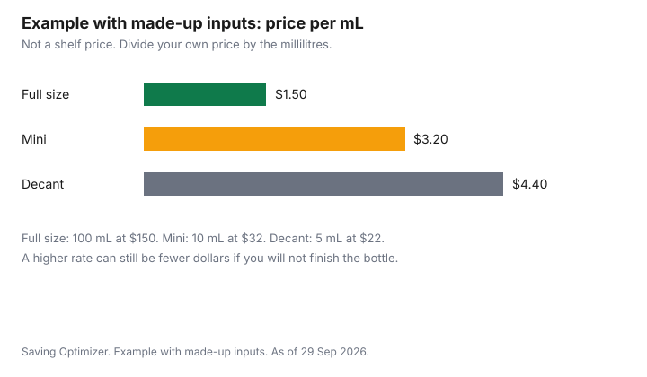

Personal Care · Canada
Fragrance for Less in Canada: Decants, Minis, Dupes and Gift Sets
Fragrance is expensive by the millilitre, and a bottle that is not what the label claims is not a bargain at any price. The useful comparison is price divided by millilitres, then a separate question about whether you are holding a sealed retail unit, a pour from someone else's bottle, or a different formula that only smells similar. Counterfeits and grey-market stock are the dupes and counterfeits guide. Gift sets and advent calendars are the gift-set guide. Carry-on liquids are the CATSA liquids guide. Holiday timing is the Black Friday and Boxing Day guide.
Disclosure: Amazon.ca storefront types and discounted retailer gift cards are offer types. Saving Optimizer may earn a commission if a partner link is added later. No storefront or gift-card partnership is claimed. A listing or a card discount does not prove a bottle is authentic. Education only.
Key takeaways
- Price per millilitre is the price divided by the millilitres in that format. A mini or a decant can cost more per millilitre and still be the right buy if you will not finish a full bottle.
- A decant is a portion moved out of the original sealed unit. You cannot inspect that seal. Treat authenticity as a separate risk from the price.
- A dupe is a different product. A counterfeit pretends to be the original. Search recalls and advisories at recalls-rappels.canada.ca before you trust a too-cheap listing.
- A gift set's worth line is an ordinary-price claim. Rebuild it from full-size prices of items you will use. The Competition Bureau's tests are on the gift-set guide.
- Perfumes and toilet waters, tariff item 3303.00.00, are on the 50 percent surtax list when the goods originate in the United States. Whether your bottle is US-origin is a question for the seller's marking or for CBSA.
Price per ml by format
Write four numbers before you compare formats. The price you will pay, including any shipping you cannot avoid. The millilitres in the container. The price divided by those millilitres. And whether you will finish that container. A lower price per millilitre on a bottle you will not finish is a higher price for the portion you wear.
Example with made-up inputs. A made-up full size is 100 millilitres at $150, which is $1.50 per millilitre. A made-up mini is 10 millilitres at $32, which is $3.20 per millilitre. A made-up decant is 5 millilitres at $22, which is $4.40 per millilitre. None of these is a Canadian shelf price. They exist so the division is visible. The mini and the decant cost more per millilitre. They can still cost fewer dollars in total. If you will wear 8 millilitres and then stop, the full size is the expensive choice even though its rate looks best. Replace every number with the listing in front of you. A discounted gift card changes the price you divide. It does not change the millilitres.
Travel sprays sit in the same sheet as minis. Read the millilitres on the atomiser, not the gift-box claim. If you will carry it on a plane, the volume limit is the CATSA guide, not a guess from the box art.
Decant sellers and authenticity
A decant is fragrance transferred into a smaller container. The seal you would have checked on a retail box is not the seal you receive. That is a description of the format, not an accusation of a particular shop. The risk is higher when the seller will not name where the juice came from, will not show the production code on the parent bottle, or prices the decant in a way you cannot reconcile with any retail size using the division above.
Authenticity is the question on the counterfeit guide: a counterfeit is sold as the original, and a grey-market bottle can be genuine and still fall outside the brand's own Canadian warranty or return path. This page does not list a test that proves a smell is real. Health Canada's cosmetics pages are where a cosmetic problem is reported. The recalls and safety-alerts search at recalls-rappels.canada.ca, date modified 29 Sep 2026 on the search page checked that day, is where you look up a product name before you buy. An Amazon.ca storefront is a listing type. The seller name on the offer is the party you are paying. Read that name. A storefront badge is not a chemical test.
Returns on an opened decant are the seller's policy, not a national rule. Read it before you pay. A department-store return on a sealed full size does not automatically cover a vial from a different seller.
Dupe houses
A dupe house sells its own formula and invites a comparison. That product is not the fragrance named on someone else's box. Judge it as its own bottle: ingredients you are willing to wear, a price per millilitre you calculated, and a return window if you dislike it. Do not pay dupe prices for a bottle that uses the original brand's name, trademarks, or packaging. That is the counterfeit problem, and it belongs on the counterfeit guide.
This page does not name a house and does not rank one. A recommendation without a dated, comparable formula test would be a slogan. If a friend likes a dupe, borrow a wearing, or buy the smallest size the seller will take back. Then decide. A dupe that you will not wear is more expensive than the original you already finish.
Gift sets as value
A gift set often prints a worth figure that adds full-size prices, sometimes including a pouch or a sample. That figure is an ordinary-price representation. The Competition Bureau's guidelines, dated 16 October 2009 and checked 29 Sep 2026, judge ordinary-price claims with a volume test and a time test, and the Bureau says the guidelines are under review. The practical step is on the gift-set guide: list each item, keep only the ones you would use, and price those at amounts you can see. Ignore the rest. A set can be the cheapest way to buy one full bottle you wanted, if the other items are worth zero to you and the bottle's own price is still lower inside the set. Do the subtraction in writing.
Holiday sets show up around the dates on the Black Friday guide. A set you will not open until next year still has to pass the package date. A discounted gift card spent on a set you will not use is a smaller loss, not a win.
Storage to keep scent
The package is the storage instruction. Keep the cap on, keep the bottle out of a hot car and off a sunny sill if you want the juice you paid for to last, and write the date you first spray it. This guide does not cite a laboratory temperature or a universal number of months. If the carton prints a period-after-opening mark, that mark is the manufacturer's figure, not a rule this page adds. An opened bottle you will not wear is not preserved by a cupboard. Sell it, give it, or stop buying the backup.
Heat and light are reasons a bathroom windowsill is a poor default, not a regulated prohibition. If you move a bottle to a cooler cupboard, leave the label readable so you still know what it is. A decant in an unmarked vial fails that test the day you forget.
| Format | Price per mL | Authenticity risk | Returns |
|---|---|---|---|
| Full size | Price divided by the millilitres on the bottle | Lowest when you buy a sealed unit from a retailer you can name | That retailer's returns page. See it before you open the box |
| Mini | Same division. The rate is often higher. The total dollars may be lower | Sealed retail minis can be checked the same way as a full size | Same retailer, same page. A mini inside a set follows the set's rule |
| Travel spray | Same division. Read the millilitres on the atomiser | Same as a mini if it is a sealed retail unit | Same retailer. Carry-on volume is the CATSA guide |
| Decant | Same division. Compare it with the full-size rate, not with a worth line | Higher, because the original seal is not in your hand | The decant seller's own policy. Do not assume a department store will take it |
| Gift set | Divide only the items you will use. Drop the rest from the value | Depends on where the set was sold. A set can include samples you cannot return alone | The set is usually one return unit. Read the page |
| Dupe | Its own price divided by its own millilitres. Do not divide the original's prestige by the dupe's price and call it a saving | A named dupe is a different product. A copy that pretends to be the original is a counterfeit question | The dupe seller's policy |
| Line | What the tariff calls it | If it originates in the United States | Ordinary duty context |
|---|---|---|---|
| 3303.00.00 | Perfumes and toilet waters | On Schedule 3, 50 percent of the value for duty, when the goods originate in the United States | Most-favoured-nation rate 6.5 percent. United States Tariff treatment Free. Whether a bottle qualifies for that treatment: check with CBSA (1-800-461-9999) or your carrier |
| Not this line | A bottle made elsewhere, even if a US warehouse ships it | Not subject to the surtax. Ordinary duty and tax can still apply | See the low-value thresholds on the US beauty guide. The thresholds are not a surtax exemption |
Customs Notice 26-23, checked 29 Sep 2026, example 2, is CBSA's arithmetic for a $150 value for duty at a 50 percent surtax and zero duty: surtax $75, value for tax $225, GST $11.25, total of surtax, duty, and GST $86.25. That is CBSA's example, not a perfume receipt. The notice also says GST is calculated on a value for tax that includes the surtax even when customs duty is remitted, and that GST is not payable on a non-taxable importation even if surtax applies. The surtax still applies under the de minimis thresholds. How a courier or Canada Post collects it on a small personal order, and whether a brokerage fee is added, is something to check with CBSA (1-800-461-9999) or your carrier. Whether a specific perfume is US-origin is the marking on the goods, the seller, or CBSA. Goods marked as originating in Puerto Rico, Guam, the Northern Mariana Islands, American Samoa, or the US Virgin Islands are excluded.

Sources & date stamps
- CBSA Customs Notice 26-23, dated 7 September 2026, checked 29 Sep 2026. Surtax rates, US origin for casual goods, de minimis does not remove the surtax, example 2 at a $150 value for duty, and GST on a value for tax that includes surtax. GST is not payable on a non-taxable importation even if surtax applies.
- United States Surtax Order (2026), SOR/2026-186, and the 2026 Customs Tariff chapter 33, checked 29 Sep 2026. Item 3303.00.00, perfumes and toilet waters, most-favoured-nation 6.5 percent, United States Tariff treatment Free. Schedule 3 places that item on the 50 percent list when the goods originate in the United States. Department of Finance list mirrors the schedules.
- Competition Bureau ordinary-price guidelines, dated 16 October 2009, checked 29 Sep 2026, for worth lines on sets. The page says the guidelines are under review.
- Health Canada cosmetics information is at canada.ca/en/health-canada/services/cosmetics.html. Report a cosmetic problem there. Recalls and safety alerts: recalls-rappels.canada.ca, search page date modified 29 Sep 2026.
- The full-size, mini, and decant dollars are made-up inputs. No fragrance shelf price was used.
Frequently asked questions
How can I buy fragrance for less in Canada?
Divide the price by the millilitres and keep the format you will finish. A mini or a decant can cost more per millilitre and still cost fewer dollars if you will not empty a full bottle. Rebuild a gift set from the items you will use, not from the worth line on the box. A discounted gift card changes the price you divide, and it does not prove the bottle is real.
Are decants legitimate?
A decant is a format: fragrance moved into a smaller container. The original retail seal is not what you receive, so authenticity is a separate question from the price. Buy from a seller who will describe the source, and read that seller's return rule before you pay. A counterfeit listing is covered on the dupes guide, and this page does not certify any seller.
Are perfume gift sets a good deal?
Only after you delete every item you will not use and price what remains at amounts you can see. A worth line is an ordinary-price claim, and the Competition Bureau's guidelines, dated 16 October 2009, describe the volume and time tests, which the Bureau says are under review. The gift-set guide is the worksheet. A set that is mostly samples you will not wear is not a deal.
Does the counter-tariff apply to perfume?
Perfumes and toilet waters, tariff item 3303.00.00, are on the 50 percent schedule of the United States Surtax Order (2026) when the goods originate in the United States. Origin, for a personal import, follows the marking as a good of the United States. A bottle made elsewhere is not subject to the surtax, though ordinary duty and tax can still apply. Whether a specific bottle is US-origin, and how a small shipment is collected, is something to check with CBSA (1-800-461-9999) or your carrier.
How do I avoid counterfeit perfume?
Buy a sealed unit from a retailer you can name, and be stricter with a decant because you cannot check that seal. Search the product on recalls-rappels.canada.ca, and use the counterfeit guide to separate a dupe, a grey-market bottle, and a fake. A price that you cannot reconcile per millilitre is a reason to pause, not a proof. Report a cosmetic problem through Health Canada's cosmetics pages.